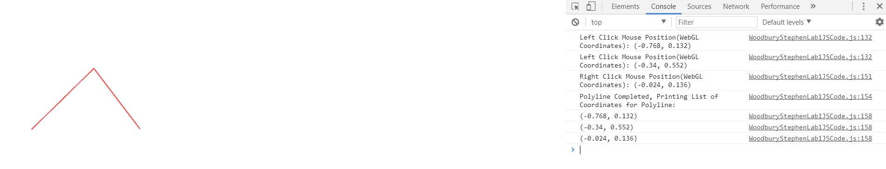

Name: Stephen Woodbury
Student ID: 1429496 : swoodbur
Submission For: Lab1
Date: 10/8/2017
Files Included: WoodburyStephenLab1Features.html, WoodburyStephenLab1Driver.html, WoodburyStephenLab1Driver.js, WoodburyStephenLab1Output.jpg
Assignment Details: To Draw a Poly-Line using a series of left click mouse positions. A Right click will end the drawing of a Poly-Line. If the Polyline is not yet complete and there is at least one known vertex of the polyline, there will be a line drawn between your mouse cursor and the last entered vertex of the poly line A vertex is entered into the polyline when the left mouse button is clicked.
Additional Features: The program functions as specified. No additional features
Notes: I added functions: screenRefresh, calculateWEBGLXCoordinate, and calculateWEBGLYCoordinate For efficiency and for easier reading. They'll be listed under Helper Functions in WoodburyStephenLab1Driver.js
ScreenShot of Output: WoodburyStephenLab1Output.jpg
Link to Driver : WoodburyStephenLab1Driver.html